Accurate
AI backed Mechanism Design ensures we capture the highest quality data from the right subset of targeted users' and prevents them from "gaming the system".
VolKno (Volume = Knowledge)
Consumers are constantly evolving, VolKno works to bridge the gap between you, your audience and the content you create.
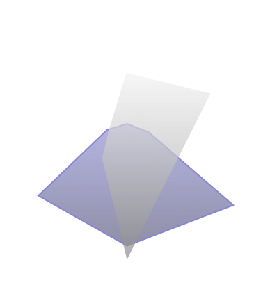
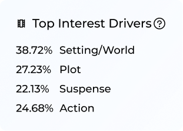
VolKno is a Consumer Intelligence Platform that leverages AI to capture the highest quality first party data to answer domain specific business questions for our partners; to optimize revenue and cut costs.
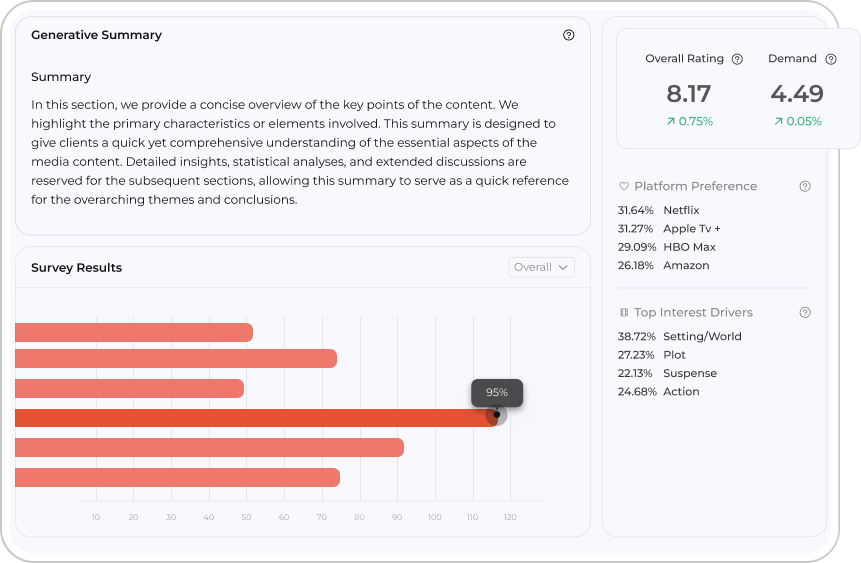
We are content and platform agnostic. Our first party data is:
AI backed Mechanism Design ensures we capture the highest quality data from the right subset of targeted users' and prevents them from "gaming the system".
Predictively accurate and correlates to our partners downstream KPI's/ business decisions. High quality inputs.
Accessible and actionable insights translate across stakeholders and business units, driving tactical decisions to optimize revenue and reduce costs
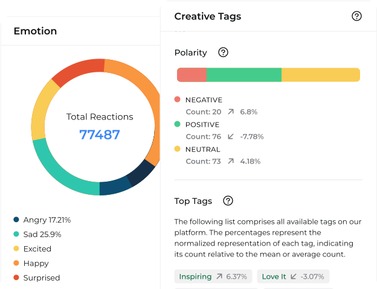
Leveraging AI-Backed Mechanism Design and Machine Learning techniques to efficiently collect, interpret, and operationalize data.
We work with our partners to define unique decision problems and provide novel technical solutions to produce measurable results that impact top and bottom line, i.e. - cut costs, optimize revenue.
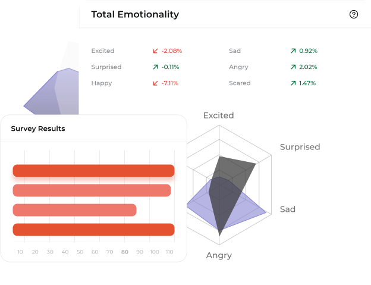
Leveraging AI-Backed Mechanism Design and Machine Learning techniques to efficiently collect, interpret, and operationalize data.
Our platform rewards users for quality responses and swiftly detects any attempts to manipulate the system. We uphold the highest data standards, ensuring insights align with partner KPIs. By prioritizing integrity and quality, we empower partners with actionable data.
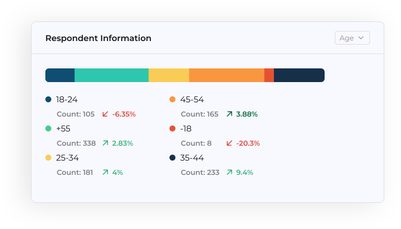
Gamified Research mechanics provide seamless data collection in real time at scale. Fun, interactive and rewarding experience for our users.
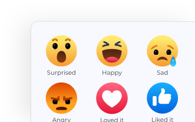
Our partners tell us: “We are better, faster and provide better unit economics than any/all incumbents”.
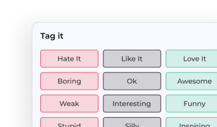
We dive deep into what the community likes / dislikes, how it makes them feel, dictate where, when, how and why they want to consume it.
VolKno partnered with a leading CPG company on the launch of a new non-toxic bug repellent. Their goal was to evaluate and optimize their creative marketing content, identify and target the right consumer segments with the right marketing content, optimize their ad spend/media buys and drive more omni-channel purchases/sales of this product, online and offline.
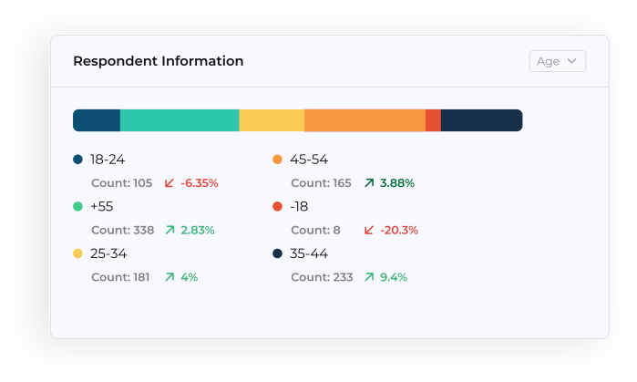
VolKno partnered with a leading influencer marketing company on the launch of a new influencer marketing campaign for a QSR brand with 100 retail locations. The goal was to identify the top influencers/creators best positioned to drive awareness and sales for the restaurant on its launch of several new menu items being released and promoted for the summer. The QSR restaurant offered a bonus to the influencer marketing company and the respective influencer, if any of the content released went viral, resulting in 10M+ impressions/views.
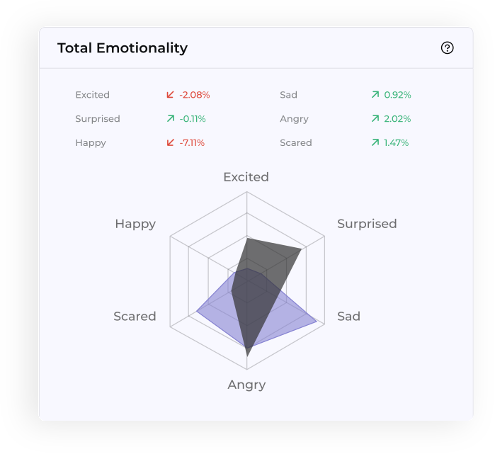
A leading studio partner came to us to build a predictive model to viewership, season momentum and decay, so they could better understand how their content would perform prior to release and when to cancel shows +/or increase marketing spend.
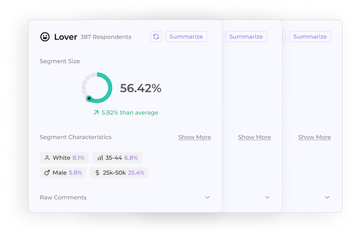
Get detailed evaluation and targeting. We identify key drivers, segmenting audiences, measuring engagement, and predicting market trends
Evaluating
Exploring the Story and Plot, Brand and Creators, Product Features and Presentation, Characters and Acting, Themes and Motifs, Subject Matter and Messaging, Pace and Tempo, Visual Style and Cinematography, Special Effects and CGI, Music, and Editing.
Analyzing Demographics (age, gender, ethnicity, income, education, parental status, marital status, etc.), Psychographics (interests, affinities, favorites, attitudes, opinions, lifestyle, values, loyalty, etc.), Emotional Reactions (to products, content, messaging, etc.), and Behavioral Patterns (interactions, views, plays, likes, shares, sentiment, purchases, consumption, etc.)
From Usage, Purchases, and Demand to Consumption, Subscribers, Viewership, CPV / CPC, Platform Preference, Social Sentiment / Velocity, Views, Likes, Shares, Listens / Plays / Spins, Downloads, Conversions, and Revenue / ROI.
Categorizing Lovers (Fans / Super fans), Casuals (on the fence / opportunity to convert), and Haters (don't waste time + money trying to convert).
From Attention and Awareness to Affinity, Sentiment, Price Sensitivity, Intent to View / Consume / Listen / Purchase, and Advertising / Marketing Impact and Effectiveness.
Optimizing
Emphasizing Creative, Advertising / Marketing, Content Messaging, Format / Length, Distribution (Platform / Audience / Library Synergy), Partnerships (Brands / Influencers / Merchandise), Converting Super fans / Fans / Casuals, Content Portfolio / Platform Synergy, Licensing / Branding Opportunities, Ad Spend / Media Buys, Audience Targeting, and Pricing (Sensitivity / Elasticity / Purchases / ROI)
Integrates with partner platforms to get feedback directly from your audiences wherever they may be.
Whether you have questions about our services, need detailed information, or require personalized assistance, our team is ready to assist you.